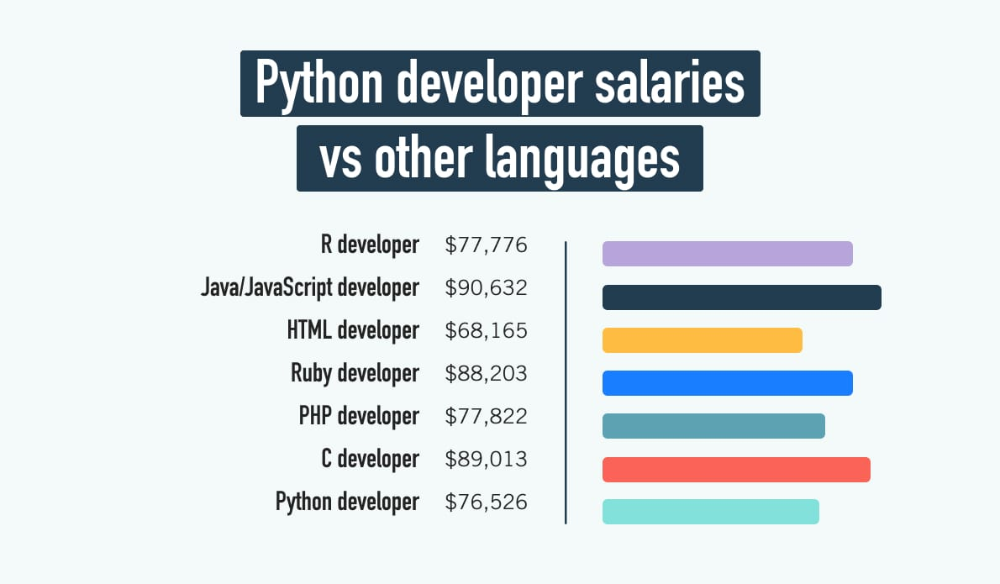
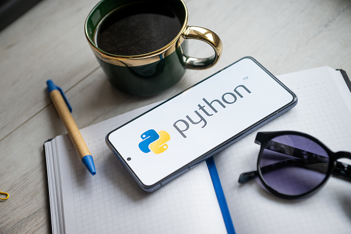

Phyton: O básico que você precisa saber
Escrito por João Manuel - Atualizado em 05/07/24

O Python é uma linguagem de programação amplamente utilizada em aplicações da Web, desenvolvimento de software, ciência de dados e aprendizado de máquina (ML).
Características Principais
Os desenvolvedores usam o Python porque é eficiente e fácil de aprender e pode ser utilizado em muitas plataformas diferentes. As principais características do Python são sua simplicidade, legibilidade, ampla biblioteca padrão, orientação a objetos, facilidade de integração e características específicas.
Aplicações e Mercado
A demanda por programadores Python está em constante crescimento. Empresas de tecnologia, startups, instituições financeiras, empresas de e-commerce e muitas outras estão procurando profissionais com habilidades em Python para desenvolver aplicativos, análise de dados, automação de processos e muito mais.
A média salarial do cargo de Desenvolvedor Python (Brasil) é de R$ 6.000 por mês.
Gráfico dos salários de Python em comparação a outras carreiras
Aprendizado e Desenvolvimento
Ele é considerado atrativo para quem quer começar a programar. Um dos motivos é a sua simplicidade. Códigos escritos em Python são de 3 a 5 vezes menores do que os na linguagem Java, por exemplo. Ele exige menos código para concluir tarefas.
Existem diferentes opiniões sobre o tempo necessário para aprender Python do zero, mas em média, leva de 3 a 6 meses para adquirir uma base sólida nessa linguagem. No entanto, é importante ressaltar que esse prazo pode ser maior ou menor dependendo das circunstâncias individuais de cada pessoa.
Conclusão
Em resumo, O Python é uma linguagem de programação poderosa, versátil e de fácil aprendizado. Através de seu design elegante e sintaxe clara, Python se tornou uma escolha popular para desenvolvedores em todo o mundo.
